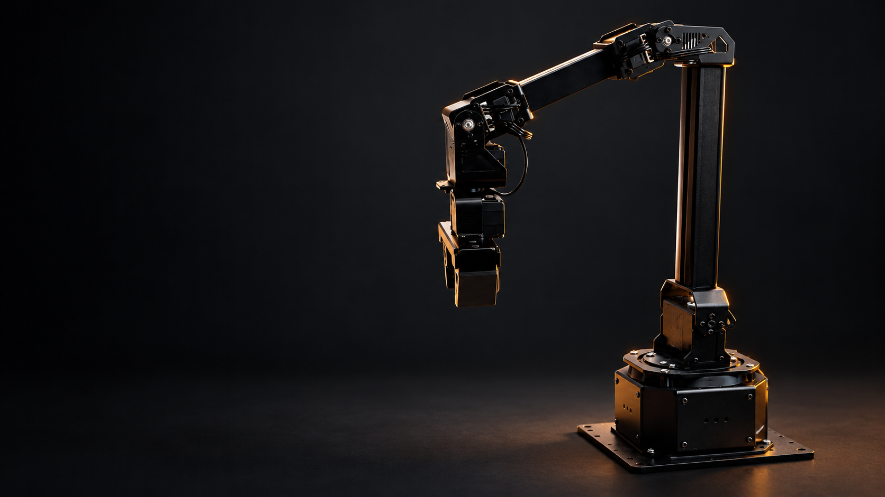
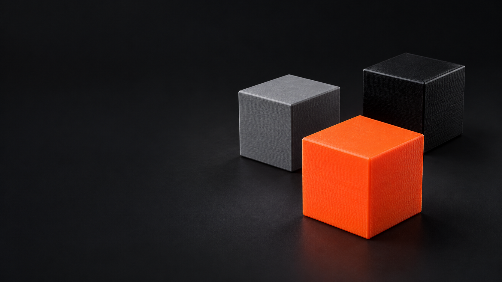

Physical AI Hack
KitRescue
A human interface
for robots

What we built
KitRescue
We taught and calibrated
the robot to handle objects.
We matched the camera’s view to the robot’s coordinates and set up its gripping and placement movements.
The arm now picks up cubes, stacks them, and moves them into or out of a tray.
How this relates to manufacturing
KitRescue
These actions could support
assembly-line work.
Our cubes stand in for parts, and the tray stands in for a component kit.
| What our robot does | How this could apply on a line |
|---|---|
| It picks up and places a cube. | It could move a component to its next station. |
| It stacks cubes in a chosen order. | It could arrange parts for the next operation. |
| It moves cubes into or out of a tray. | It could load a kit or remove a misplaced part. |
Demo 01
KitRescue
Our robot
carries out
the task.
The camera locates the cube, and the arm completes the planned movement.
The calibrated routine
VIDEO 01
Where the human interface matters
KitRescue
When the task changes,
the operator can explain the correction.
We are adding voice so a person can request an action the robot already supports.
An example on the line
A tray is missing a component.
The operator notices that the orange part was left on the table.
The operator’s instruction
“Put the orange cube in the tray.”
The voice layer will turn this request into a supported transfer task.
Demo 02
KitRescue
We are adding
spoken
instructions.
“Put the orange
cube in the tray.”
Voice integration is
in progress.
The spoken correction
VIDEO 02
The ambition
KitRescue
We want operators to guide robots
when production needs a correction.
KitRescue starts with physical tasks we have implemented and adds a human interface for requesting them.
What works today
The robot performs the physical tasks.
Our arm picks and stacks cubes, and transfers them into or out of a tray.
What we are building next
The operator will request them by voice.
We are connecting speech and task interpretation to the existing controller.